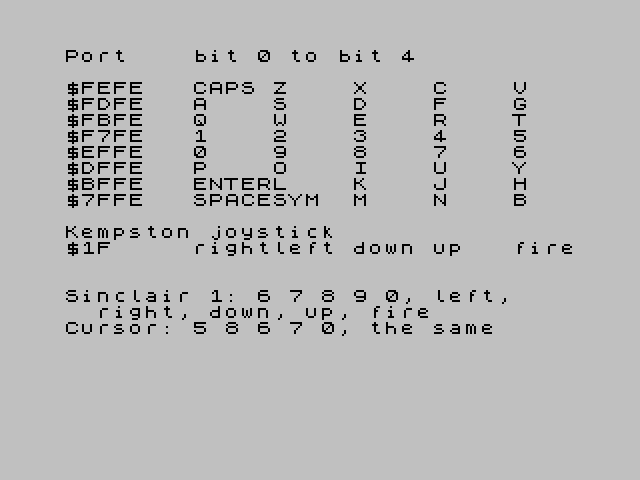

9. Input
The Spectrum's keyboard is read straight from the ULA, a few keys at a time, with no buffer and no interrupt of its own; joysticks were add-ons, and came in two kinds that work completely differently. This chapter reads all of them, and examples/ch09_input.asm shows each key and each joystick direction light up as it's pressed.
The keyboard's half-rows
The 40 keys are wired as eight half-rows of five. Reading port $FE reads them, and the high byte of the port's address chooses which: each of its bits, when 0, selects one half-row. Bits 0 to 4 of the byte read are that half-row's five keys, 0 when pressed: "The bit is 0 if the key is pressed, 1 if it is not" (the 48K manual, chapter 23, <https://worldofspectrum.org/ZXBasicManual/zxmanchap23.html>). The half-rows, from World of Spectrum's 48K reference (<https://worldofspectrum.org/faq/reference/48kreference.htm>), bit 0 first:
| Port | Bit 0 | Bit 1 | Bit 2 | Bit 3 | Bit 4 |
|---|---|---|---|---|---|
$FEFE |
CAPS SHIFT | Z | X | C | V |
$FDFE |
A | S | D | F | G |
$FBFE |
Q | W | E | R | T |
$F7FE |
1 | 2 | 3 | 4 | 5 |
$EFFE |
0 | 9 | 8 | 7 | 6 |
$DFFE |
P | O | I | U | Y |
$BFFE |
ENTER | L | K | J | H |
$7FFE |
SPACE | SYMBOL SHIFT | M | N | B |
The order is the keyboard's, from the outside in: on the left half of the keyboard bit 0 is the leftmost key, on the right half the rightmost. That's why the number row reads 1 2 3 4 5 and then 0 9 8 7 6.
IN A,($FE) puts A on the port's high byte, so:
ld a,$7F ; the half-row SPACE, SYM SHIFT, M, N, B
in a,($FE)
rra ; SPACE into the carry
jr nc,SpacePressed ; 0: pressedSelecting several half-rows at once (more than one 0 bit in the high byte) reads them ANDed together: XOR A then IN A,($FE) reads all eight, and any 0 in bits 0 to 4 means some key is down: the quickest "press any key".
Bits 5 to 7 of the byte aren't keys. Bit 6 is the tape input: "Bit 6 of IN-Port 0xfe is the EAR input bit" (48K reference); mask it off, as it can be either. Bits 5 and 7 are best ignored.
The same read is how the startup's main loop looks for SPACE (chapter 4), and why SPACE always leaves the examples.
Ghosting
A keyboard wired as a matrix has a weakness: with three keys held down at three corners of a rectangle in the matrix, the fourth corner can read as pressed too. Two keys together are always read right; it's the third that can bring in a ghost. Games that need three keys at once (two directions and fire) choose them with that in mind, or use a joystick.
Joysticks
Kempston
The Kempston interface is read from port $1F: "0x1F ... Kempston joy 1" (the Next's port list, which keeps the Kempston's mapping: <https://gitlab.com/SpectrumNext/ZX_Spectrum_Next_FPGA/-/raw/master/cores/zxnext/ports.txt>). Its bits are the other way round from the keyboard's, 1 when pressed:
| Bit | 0 | 1 | 2 | 3 | 4 |
|---|---|---|---|---|---|
| Kempston | right | left | down | up | fire |
in a,($1F)
and %00011111
bit 4,a ; fire
jr nz,FireWith no Kempston plugged in, port $1F isn't answered, and reads whatever is on the bus: $FF in the border's time on a 48K or 128K, or a byte of the screen while the ULA is fetching (chapter 3). A program that reads it without checking sees phantom movement. A reliable test: no joystick can push left and right at once, so a value with both bits 0 and 1 set means no Kempston. The example reads it just after the interrupt, in the top border, and uses that test.
Sinclair and cursor joysticks
The Sinclair joysticks (two, as on Sinclair's Interface 2) and cursor joysticks don't have ports of their own: they press keys. A program reads them as the keyboard. By Fuse's joystick mappings (<https://sources.debian.org/src/fuse-emulator/1.5.7%2Bdfsg1-4/peripherals/joystick.c>):
| left | right | up | down | fire | |
|---|---|---|---|---|---|
| Sinclair 1 | 6 | 7 | 9 | 8 | 0 |
| Sinclair 2 | 1 | 2 | 4 | 3 | 5 |
| Cursor | 5 | 8 | 7 | 6 | 0 |
So Sinclair 1 is the half-row $EFFE alone (6, 7, 8, 9, 0 are its bits 4 to 0), and Sinclair 2 the half-row $F7FE alone, each a single read. Cursor keys are split over two half-rows (5 is in $F7FE, the rest in $EFFE).
Reading every control the same way
A game should let the player use whatever they have. The usual way is a routine that reads every control and returns one byte of directions and fire, the same whatever pressed them, as chapter 12's game does:
; ReadControls: A's bits 0 to 2 set for left, right and fire, from the keys (O, P, ENTER), Sinclair joystick 1
; (6, 7, 0) and a Kempston joystick, whichever is used.Let the player redefine the keys, too: keep a table of the port's high byte and the bit for each control, and read through it, rather than writing the keys into the code.

The test suite presses Q on the built-in Spectrum and checks that Q's place lights up.